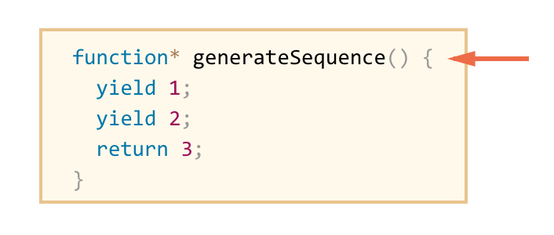
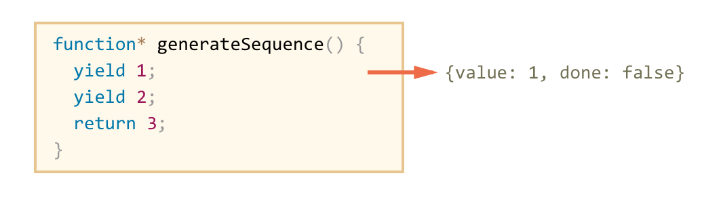
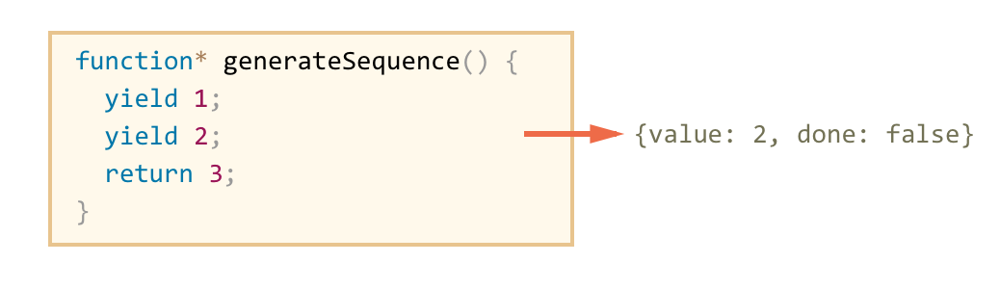
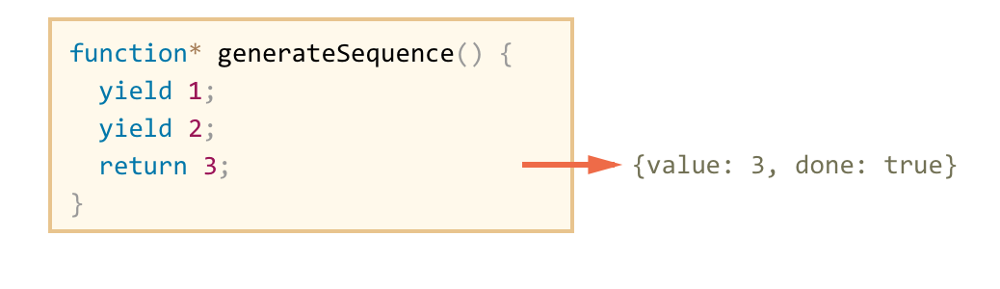
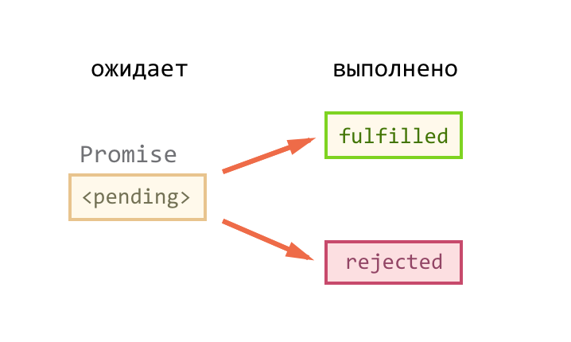

Гладкий Максим Валерьевич / github:MaksHladki
17 июня 2015 года генеральное собрание Ecma International официально одобрило стандарт ECMA-262 версии 6.0
var num = 10;
var func = function() {
var num = 20;
console.log(num); // 20
};
console.log(num); // 10
es5
if (true) {
var a = 10;
}
console.log(a); // 10
es6
var a;
if (false) {
a = 10;
}
console.log(a); // undefined
Позволяет объявить локальную переменную с областью видимости, ограниченной текущим блоком кода
let var1 [= value1] [, var2 [= value2]] [, ..., varN [= valueN]];
//var1, var2, …, varN - имя переменной (любой допустимый идентификатор)
//value1, value2, …, valueN - значение переменной (любое допустимое выражение)
es5
var apples = 5;
if (true) {
var apples = 10;
console.log(apples); // 10 (внутри блока)
}
console.log(apples); // 10 (снаружи блока то же самое)
es6
let apples = 5;
if (true) {
let apples = 10;
console.log(apples); // 10 (внутри блока)
}
console.log(apples); // 5 (снаружи блока значение не изменилось)
console.log(a); // undefined
var a = 5;
console.log(a); // ReferenceError: a is not defined
let a = 5;
let x;
let x; // SyntaxError: Identifier 'x' has already been declared
if (true) {
let apples = 10;
console.log(apples); // 10 (внутри блока)
}
console.log(apples); // ReferenceError: apples is not defined
es5
for(var i=0; i<10; i++) {
console.log(i); // 0, 1, 2, 3, 4 ... 9
}
console.log(i); // 10
es6
for (let i = 0; i<10; i++) {
console.log(i); // 0, 1, 2, 3, 4 ... 9
}
console.log(i); // i is not defined
function shooterBuilder() {
let shooters = [];
for (let i = 0; i < 10; i++) {
shooters.push(function() {
console.log(i);
});
}
return shooters;
}
var x = shooterBuilder();
x[0](); // 0
x[5](); // 5
//При использовании var было бы 10 10
Значение констант не может быть изменено новым присваиванием и не может быть переопределено. Константы подчиняются области видимости уровня блока
const name1 = value1 [, name2 = value2 [, ... [, nameN = valueN]]];
//nameN - имя константы (те же правила, что и для переменных)
//valueN - значение константы
const apple = 5;
apple = 10; // Uncaught TypeError: Assignment to constant variable
const user = {
name: "Alex"
};
user.name = "Maks"; // допустимо
user = 5; // Uncaught TypeError: Assignment to constant variable
const lit = 4;
lit = 5; // TypeError: Литерал изменить нельзя
const obj = { a: 1 };
obj.a = 2; // Значения внутри объекта изменить можно
console.log(obj); // { a: 2 }
obj = { a: 3 }; // TypeError: Ссылку менять нельзя
const arr = [1, 2, 3];
arr.push(4); // Значения внутри массива изменить можно
console.log(arr); // [1, 2, 3, 4]
obj = [4, 3, 2, 1]; // TypeError: Ссылку менять нельзя
Особый синтаксис присваивания, при котором можно присвоить массив или объект сразу нескольким переменным, разбив его на части
let [firstName, lastName] = ['Иван', 'Иванов'];
console.log(firstName); // Иван
console.log(lastName); // Иванов
// первый и второй элементы не нужны
let [, , middleName] = "Иванов Иван Иванович (1971)".split(" ");
console.log(middleName); // Иванович
Первый и второй, а также все элементы после третьего никуда не записались, они были отброшены
let [fisrt, last, ...rest] = "Все ЛР должны быть сданы".split(" ");
console.log(first); // Все
console.log(last); // ЛР
console.log(rest); // должны быть сданы (массив из 3х элементов)
let [firstName, lastName] = [];
console.log(firstName); // undefined
let [firstName="Гость", lastName="Анонимный"] = [];
console.log(firstName); // Гость
console.log(lastName); // Анонимный
function defaultLastName() {
return Date.now() + '-visitor';
}
// lastName получит значение, соответствующее текущей дате:
let [firstName, lastName=defaultLastName()] = ["Вася"];
console.log(firstName); // Вася
console.log(lastName); // 1436...-visitor
let a, b;
[a, b] = [1, 2];
console.log(a); // 1
console.log(b); // 2
var a = 1;
var b = 3;
[a, b] = [b, a];
console.log(a); // 3
console.log(b); // 1
function f() {
return [1, 2];
}
var a, b;
[a, b] = f();
console.log(a); // 1
console.log(b); // 2
// Строки
var [a, b, c] = 'xyz';
console.log(a, b, b); // x y z
// Коллекции DOM элементов
var [link1, link2] = document.links;
console.log(link1.tagName); // a
console.log(link2.textContent); // Пример ссылки
let {var1, var2} = {var1:…, var2…}
var calc = function(num) {
return Math.pow(num, 2);
};
var { prop: x, pow: y = calc(x)} = { prop: 4 };
console.log(x, y); // 4 16
var { prop: x, pow: y = calc(x)} = { prop: 4, pow: 10 };
console.log(x, y); // 4 10
let options = {
title: "Меню",
width: 100,
height: 200
};
let {title, width, height} = options;
console.log(title); // Меню
console.log(width); // 100
console.log(height); // 200
let options = {
title: "Меню",
width: 100,
height: 200
};
let {width: w, height: h, title} = options;
console.log(title); // Меню
console.log(w); // 100
console.log(h); // 200
let options = {
title: "Меню"
};
let {width=100, height=200, title} = options;
console.log(title); // Меню
console.log(width); // 100
console.log(height); // 200
let options = {
title: "Меню"
};
let {width:w=100, height:h=200, title} = options;
console.log(title); // Меню
console.log(w); // 100
console.log(h); // 200
var width, height;
({width, height} = {width: 100,height: 200});
console.log(width);// 100
console.log(height);// 200
let key = "title";
let { [key]: t } = {title: "Меню"};
console.log(t); // Меню
let options = {
size: {
width: 100,
height: 200
},
items: ["Пончик", "Пирожное"]
}
let { title="Меню", size: {width, height}, items: [item1, item2] } = options;
// Меню 100 200 Пончик Пирожное
console.log(title); // Меню
console.log(width); // 100
console.log(height); // 200
console.log(item1); // Пончик
console.log(item2); // Пирожное
function [name]([param1[ = defaultValue1 ][, ..., paramN[ = defaultValueN ]]]) {
//function's body
}
function multiply(a, b = 1) {
return a*b;
}
console.log(multiply(5)); // 5
Даже при явном указании 'undefined' параметру присваивается значение по умолчанию
function multiply(a, b = 1) {
return a*b;
}
multiply(5, undefined); // 5
function append(value, array = []) {
array.push(value);
return array;
}
append(1); //[1]
append(2); //[2]
function getRandomInt(min, max) {
return Math.floor(Math.random() * (max - min)) + min;
}
function print(number = getRandomInt(10, 100)){
console.log(number);
}
print();//29
В отличие от arguments, rest - это массив, а значит, можно использовать методы map, forEach и т.д.
function printName(firstName, lastName, ...rest) {
console.log(firstName + ' ' + lastName + ' - ' + rest);
console.log(rest);
}
printName('Иван', 'Иванов', 'Иванович', '1959');
//Иван Иванов - Иванович,1959
//["Иванович", "1959"]
function getRandomInt(min, max)
{
return Math.floor(Math.random() * (max - min)) + min;
}
console.log(getRandomInt.name);//getRandomInt
getRandomInt.name = 'f';
console.log(getRandomInt.name); //getRandomInt
console.log(f.name);// ReferenceError: f is not defined
if(something){
getRandomInt(0, 10);//4
function getRandomInt(min, max) {
return Math.floor(Math.random() * (max - min)) + min;
}
}
getRandomInt(0, 10);//ReferenceError: getRandomInt is not defined
Выражения имеют более короткий синтаксис, всегда анонимные и лексически привязанные к значению this
(param1, param2, paramN) => expression
var faculties = [
"ИТ",
"ИЭФ",
"ХТИТ"
];
var a = faculties.map(function(s){ return s.length });//[2,3,4]
var b = faculties.map( s => s.length);//[2,3,4]
let square = x => x*x;
console.log(square(3));//9
let sum => (x, y) => x + y;
console.log(sum(3,4));//7
let getObject = () => ({ brand: 'BMW' });
console.log(getObject());//Object {brand: "BMW"}
let func = () => 77;
console.log(func());//77
var handler = {
id: "123456",
init: function() {
document.addEventListener("click", ev => this.doSomething(ev.type));
//this указывает на внешний контекст
},
doSomething: function(type) {
console.log("Handling " + type + " for " + this.id);
}
};
function foo() {
var f = (i) => arguments[0]+i;
//возмет arguments из функции foo
console.log(f(2));
}
foo(1); // 3
var a = new (function() {});
// переменной a будет присвоено значение экземпляра анонимной функции
var b = new (() => {});
//TypeError: (intermediate value) is not a constructor
Выглядят как обычные строки, за исключением того, что обернуты символами обратных кавычек `
`строка текста`
`строка текста 1
строка текста 2`
`строка текста ${выражение} строка текста`
tag `строка текста ${выражение} строка текста`
console.log(`string text line 1
string text line 2`);
// "string text line 1
// string text line 2"
let arg1 = 2;
let arg2 = 3;
console.log(`${arg1} + ${arg2} = ${arg1 + arg2}`); // 2 + 3 = 5
function authorize(user, action) {
if (!user.hasPrivilege(action)) {
throw new Error(
`Пользователю ${user.name} не разрешено ${action}.`);
}
}
const up = (str) => str.toUpperCase();
let str = `this is ${ up('sting') } in uppercase`;
console.log(str); // this is STRING in uppercase
const up = (str) => str.toUpperCase();
let user = 'user';
let str = `these ${up(`${user}s`)} are great`;
console.log(str); // these USERS are great
Используется кодировка UTF-16. На хранение одного символа необходимо 2 байта
console.log( '我'.length ); // 1
console.log( '𩷶'.length ); // 2
//расширенная поддержка метасимволов, математических символов и смайликов
console.log( '𝒳'.length ); // 2, MATHEMATICAL SCRIPT CAPITAL X
console.log( '😂'.length ); // 2, FACE WITH TEARS OF JOY
Проверяет, включает ли одна строка str в себя другую строку searchString, возвращает true/false
str.includes(searchString[, position])
var str = 'To be, or not to be, that is the question.';
console.log(str.includes('To be')); // true
console.log(str.includes('question')); // true
console.log(str.includes('nonexistent')); // false
console.log(str.includes('To be', 1)); // false
console.log(str.includes('TO BE')); // false
Возвращает true, если строка str заканчивается подстрокой searchString
str.endsWith(searchString[, position])
var str = 'To be, or not to be, that is the question.';
console.log(str.endsWith('question.')); // true
console.log(str.endsWith('to be')); // false
console.log(str.endsWith('to be', 19)); // true
Возвращает true, если строка str начинается со строки searchString
str.startsWith(searchString[, position])
var str = 'To be, or not to be, that is the question.';
console.log(str.startsWith('To be')); // true
console.log(str.startsWith('not to be')); // false
console.log(str.startsWith('not to be', 10)); // true
Повторяет строку str count раз
str.repeat(count)
'abc'.repeat(-1); // RangeError
'abc'.repeat(0); // ''
'abc'.repeat(1); // 'abc'
'abc'.repeat(2); // 'abcabc'
'abc'.repeat(3.5); // 'abcabcabc' (count will be converted to integer)
'abc'.repeat(1/0); // RangeError
Процесс использования своей функции шаблонизации для строк
let str = func`моя строка`;
function f(strings, ...values) {
console.log(JSON.stringify(strings)); // ["Sum of "," + "," =\n ","!"]
console.log(JSON.stringify(strings.raw)); // ["Sum of "," + "," =\\n ","!"]
console.log(JSON.stringify(values)); // [3,5,8]
}
let arg1 = 3;
let arg2 = 5;
let str = f`Sum of ${arg1} + ${arg2} =\n ${arg1 + arg2}!`;
Статический метод Raw является теговой функцией для шаблонных строк и используется для получения необработанной строки из шаблона
String.raw(callSite, ...substitutions)
String.raw`templateString`
function tag(strings, ...values) {
return strings.raw[0];
}
tag`string text line 1 \n string text line 2`;
// "string text line 1 \\n string text line 2"
Уникальный и неизменяемый тип данных, который может быть использован как идентификатор для свойств объектов
Символьный объект — это объект-обертка для примитивного символьного типа
Symbol([описание])
//создается новый символ, значение которого не равно любому другому объекту
| Symbol.for(key) | ищет существующие символы по заданному ключу и возвращает его, если он найден. В противном случае создается новый символ в глобальном реестре символов |
| Symbol.keyFor(sym) | получает по разделяемому символу его ключ из глобального реестра символов |
var sym1 = Symbol();
var sym2 = Symbol("foo");
var sym3 = Symbol("foo");
var sym = Symbol("foo");
typeof sym; // "symbol"
var symObj = Object(sym);
typeof symObj; // "object"
console.log(Symbol("name") == Symbol("name")); // false
let isAdmin = Symbol("isAdmin");
let user = {
name: "Вася",
[isAdmin]: true
};
console.log(user[isAdmin]); // true
Свойство, объявленное через символ, не будет видно в for-in, Object.keys, Object.getOwnPropertyNames, также не будет добавлено при использовании JSON.stringify
let user = {
name: "Вася",
age: 30,
[Symbol.for("isAdmin")]: true
};
// в цикле for..in не будет символа
console.log(Object.keys(user)); // name, age
// доступ к свойству через глобальный символ — работает
console.log(user[Symbol.for("isAdmin")]);
var role = Symbol();
var user = {
id: 1001,
name: 'Administrator',
[role]: 'admin'
};
var userRole = user[role]; // 'admin' - работает
var userRole1 = user.role; // undefined - не работает
var userRole2 = user['role']; // undefined - не работает
Глобальный реестр символов позволяет иметь общие глобальные символы, которые можно получить из реестра по имени. Используется метод for
// создание символа в реестре
let name = Symbol.for("name");
// символ уже есть, чтение из реестра
console.log(Symbol.for("name") == name); // true
| Symbol.iterator | возвращающий итератор для объекта |
| Symbol.match | сопоставление объекта со строкой (String.prototype.match) |
| Symbol.replace | заменяет совпавшие подстроки в строке (String.prototype.replace) |
| Symbol.search | возвращает индекс вхождения подстроки, соответствующей регулярному выражению (String.prototype.search) |
| Symbol.split | разбивает строку на части в местах, соответствующих регулярному выражению (String.prototype.split) |
| Symbol.for(key) | ищет существующие символы по заданному ключу и возвращает его, если он найден |
| Symbol.species | определяет конструктор для порожденных объектов |
При объявлении свойства объекта достаточно указать только его имя, а значение будет взято из переменной с аналогичным именем
let name = "Вася";
let isAdmin = true;
let user = {
name,
isAdmin
};
console.log(JSON.stringify(user)); // {"name": "Вася", "isAdmin": true}
let propName = "firstName";
let user = {
[propName]: "Вася"
};
console.log(user.firstName); // Вася
let a = "Зелёный ";
let b = "Крокодил";
let user = {
[(a + b).toLowerCase()]: "Петя"
};
console.log( user["зелёный крокодил"] ); // Петя
Метод устанавливает прототип (внутреннее свойство [[Prototype]]) указанного объекта в другой объект или null
Object.setPrototypeOf(obj, prototype);
var dict = Object.setPrototypeOf({}, null);
Метод используется для копирования значений всех собственных перечисляемых свойств из одного или более объектов в целевой объект
Object.assign(target, src1, src2...)
var o1 = { a: 1 };
var o2 = { b: 2 };
var o3 = { c: 3 };
var obj = Object.assign(o1, o2, o3);
console.log(obj); // { a: 1, b: 2, c: 3 }
console.log(o1); // { a: 1, b: 2, c: 3 }
// изменился и целевой объект
Метод определяет, являются ли два значения одинаковыми
var isSame = Object.is(value1, value2);
Object.is('foo', 'foo'); // true
Object.is(window, window); // true
Object.is('foo', 'bar'); // false
Object.is([], []); // false
var test = { a: 1 };
Object.is(test, test); // true
Object.is(null, null); // true
// Специальные случаи
Object.is(0, -0); // false
Object.is(-0, -0); // true
Object.is(NaN, 0/0); // true
Object.is(NaN, NaN); // true
Более короткий и удобный синтаксис
let name = "Вася";
let user = {
name,
//something: function()
//{
//console.log(this.name);
//}
something() {
console.log(this.name);
}
};
user.something(); // Вася
class Название [extends Родитель] {
constructor
методы
}
class Polygon {
constructor(height, width) {
this.height = height;
this.width = width;
}
}
// безымянный
var Polygon = class {
constructor(height, width) {
this.height = height;
this.width = width;
}
};
// именованный
var Polygon = class Polygon {
constructor(height, width) {
this.height = height;
this.width = width;
}
};
Constructor запускается при создании new Object, остальные методы записываются в Object.prototype
class User {
constructor(name) {
this.name = name;
}
sayHi() { console.log(this.name);}
}
let user = new User("Вася");
function User(name) {
this.name = name;
}
User.prototype.sayHi = function() {
console.log(this.name);
};
Разница между объявлением функции (function declaration) и объявлением класса (class declaration) в том, что объявление функции совершает подъём (hoisted), в то время как объявление класса — нет
var p = new Polygon(); // ReferenceError
class Polygon {}
class Point {
constructor(x, y) {
this.x = x;
this.y = y;
}
static distance(a, b) {
const dx = a.x - b.x;
const dy = a.y - b.y;
return Math.sqrt(dx*dx + dy*dy);
}
}
const p1 = new Point(5, 5);
const p2 = new Point(10, 10);
console.log(Point.distance(p1, p2));
class User {
constructor(firstName, lastName) {
this.firstName = firstName;
this.lastName = lastName;
}
get fullName() {
return `${this.firstName} ${this.lastName}`;
}
set fullName(newValue) {
[this.firstName, this.lastName] = newValue.split(' ');
}
};
class Rectangle {
constructor (width, height) {
this._width = width
this._height = height
}
set width (width) { this._width = width}
get width () { return this._width}
set height (height) { this._height = height}
get height () { return this._height}
get area () { return this._width * this._height }
}
var test = new Rectangle(50, 20)
console.log(test.area);//1000
class Foo() {
myMethod() {}
}
class Foo() {
['my'+'Method']() {}
}
const m = 'myMethod';
class Foo() {
[m]() {}
}
Только один конструктор, прототип, базовый класс!
class Child extends Parent {
//TODO logic
}
class Point {
constructor(x, y) {
this.x = x;
this.y = y;
}
toString() {
return '(' + this.x + ', ' + this.y + ')';
}
}
class ColorPoint extends Point {
constructor(color) {
this.color = color;
}
toString() {
return super.toString() + ' in ' + this.color;
}
}
class Foo {
static classMethod() {
return 'hello';
}
}
class Bar extends Foo {
//TODO
}
Bar.classMethod(); // 'hello'
Используется для вызова функций, принадлежащих родителю объекта
super([arguments]); //вызов родительского конструктора
super.functionOnParent([arguments]);
class Polygon {
constructor(height, width) {
this.height = height;
this.width = width;
}
}
class Square extends Polygon {
constructor(length) {
super(length, length);
}
get area() {
return this.height * this.width;
}
}
class Foo {
static classMethod() {
return 'hello';
}
}
class Bar extends Foo {
static classMethod() {
return super.classMethod() + ', too';
}
}
Bar.classMethod(); // 'hello, too'
Абстрактные подклассы (mix-ins) — это шаблоны для классов. У класса может быть только один родительский класс, поэтому множественное наследование невозможно. Функциональность должен предоставлять родительский класс
class B extends A, M {}//множественного наследования нет
const mixin = base => class extends base {
/* свойства и методы */
}
class Person { ··· }
const Storage = Sup => class extends Sup {
save(database) { ··· }
};
const Validation = Sup => class extends Sup {
validate(schema) { ··· }
};
class Employee extends Storage(Validation(Person)) { ··· }
let MyMixin = (superclass) => class extends superclass {
test() {
console.log('test from MyMixin');
}
};
class MyClass extends MyMixin(MyBaseClass) {
/* ... */
}
let c = new MyClass();
c.test(); // test from MyMixin
Выполняет цикл обхода итерируемых объектов, вызывая на каждом шаге итерации операторы для каждого значения из различных свойств объекта
for (переменная of объект)
оператор
let arr = [ 3, 5, 7 ];
arr.foo = "hello";
for (let i in arr) {
console.log(i); // "0", "1", "2", "foo"
}
for (let i of arr) {
console.log(i); // "3", "5", "7"
}
// Строки
let result = '';
for (let chr of 'this is string') {
result += chr.trim();
}
console.log(result); // thisisstring
// Коллекции DOM элементов
let result = [];
for (let link of document.links) {
result.push(link.href);
}
console.log(result); // ['http://google.com', 'http://jsraccoon.ru', ...]
Объект является итератором, если он умеет обращаться к элементам коллекции по одному за раз, при этом отслеживая свое текущее положение внутри этой последовательности
В JS итератор - это объект, который предоставляет метод next(), возвращающий следующий элемент последовательности. Этот метод возвращает объект с двумя свойствами: done и value
interface Iterable {
[Symbol.iterator]() : Iterator;
}
interface Iterator {
next() : IteratorResult;
}
interface IteratorResult {
value: any;
done: boolean;
}
function makeIterator(array){
var nextIndex = 0;
return {
next: function(){
return nextIndex < array.length ?
{value: array[nextIndex++], done: false} :
{done: true};
}
}
}
var it = makeIterator(['yo', 'ya']);
console.log(it.next().value); // 'yo'
console.log(it.next().value); // 'ya'
console.log(it.next().done); // true
let range = {
from: 1,
to: 5
}
range[Symbol.iterator] = function() {
let current = this.from;
let last = this.to;
return {
next() {
if (current <= last) {
return {done: false, value: current++};
} else {
return {done: true};
}
}
}
};
//for (let num of range)
function idMaker(){
var index = 0;
return {
next: function(){
return {value: index++, done: false};
}
}
}
var it = idMaker();
console.log(it.next().value); // '0'
console.log(it.next().value); // '1'
console.log(it.next().value); // '2'
//.....
let str = "Hello";
let iterator = str[Symbol.iterator]();
while(true) {
let result = iterator.next();
if (result.done) break;
console.log(result.value); // 'H' 'e' 'l' 'l' 'o'
}
var someString = "hi";
var iterator = someString[Symbol.iterator]();
console.log(iterator + ""); // "[object String Iterator]"
console.log(iterator.next()); // { value: "h", done: false }
console.log(iterator.next()); // { value: "i", done: false }
console.log(iterator.next()); // { value: undefined, done: true }
Это функции с возможностью повторного входа после выхода. Их контекст исполнения (значения переменных) сохраняется при последующих входах
function* gen(i){
while(true){
yield i++;
yield* anotherGenerator(i);
}
}
function* idMaker(){
var index = 0;
while(true)
yield index++;
}
var gen = idMaker();
console.log(gen.next().value); // 0
console.log(gen.next().value); // 1
console.log(gen.next().value); // 2
// ...
function* generateSequence() {
yield 1;
yield 2;
return 3;
}
// создаeт generator
let generator = generateSequence();

let one = generator.next();
console.log(JSON.stringify(one)); // {value: 1, done: false}

let two = generator.next();
console.log(JSON.stringify(two)); // {value: 2, done: false}

let three = generator.next();
console.log(JSON.stringify(three)); // {value: 3, done: true}

Новые вызовы generator.next() не имеют смысла. Они будут возвращать один и тот же объект
function* generateSequence() {
yield 1;
yield 2;
return 3;
};
let generator = generateSequence();
for(let value of generator) {
console.log(value); // 1, затем 2
}
//Cтандартный перебор итератора игнорирует value на последнем значении,
// при done: true
function *foo(x) {
var y = 2 * (yield (x + 1));
var z = yield (y / 3);
return (x + y + z);
}
var it = foo( 5 );
console.log(it.next()); // { value:6, done:false }
console.log(it.next(12)); // { value:8, done:false }
console.log(it.next(13)); // { value:42, done:true }
let fibonacci = {
*[Symbol.iterator]() {
let pre = 0, cur = 1
for (;;) {
[ pre, cur ] = [ cur, pre + cur ]
yield cur
}
}
}
for (let n of fibonacci) {
if (n > 1000)
break
console.log(n)
}
//1 2 3 5 8 13...
function* generateSequence(start, end) {
for (let i = start; i <= end; i++) yield i;
}
function* generateAlphaNum() {
// 0..9
yield* generateSequence(48, 57);
// A..Z
yield* generateSequence(65, 90);
// a..z
yield* generateSequence(97, 122);
}
let str = '';
for(let code of generateAlphaNum()) {
str += String.fromCharCode(code);
}
console.log(str); // 0..9A..Za..z
Внешний код может вернуть генератору в качестве результата yield любое значение, в том числе и ошибку
function* gen() {
try {
let result = yield "Сколько будет 2 + 2?"; // (2)
} catch(e) {
console.log(e); // fatal error
}
}
let generator = gen();
let question = generator.next().value;
console.log(question);//Сколько будет 2 + 2?
generator.throw(new Error("fatal error")); // (1)
Коллекция для хранения множества значений, причём каждое значение может встречаться лишь один раз
new Set([iterable]);
| add(item) | добавляет в коллекцию item, возвращает set |
| delete(item) | удаляет item из коллекции, возвращает true, если он там был |
| has(item) | возвращает true, если item есть в коллекции |
| clear() | очищает set |
| keys()/values() | возвращает объект-итератор на все значения множества |
| size | возвращает количество элементов |
var mySet = new Set();
mySet.add(1);
mySet.add(5);
mySet.add("some text");
mySet.has(1); // true
mySet.has(3); // false
mySet.has(Math.sqrt(25)); // true
mySet.has("Some Text".toLowerCase()); // true
mySet.size; // 3
mySet.delete(5); // удаляет 5 из set
mySet.has(5); // false, 5 было удалено
mySet.size; // 2, было удалено одно значение
for (let item of mySet) console.log(item);
// 1, "some text"
for (let item of mySet.keys()) console.log(item);
//1, "some text"
for (let item of mySet.values()) console.log(item);
//1, "some text"
// преобразует set в Array
var myArr = [v for (v of mySet)]; // [1, "some text"]
// преобразования из Set в Array и обратно
mySet2 = new Set([1,2,3,4]);
[...mySet2]; // [1,2,3,4]
mySet.forEach(function(value) {
console.log(value);
});
// 1 2 3 4
Коллекция для хранения записей вида ключ-значение
new Map([iterable])
| size | возвращает общее количество записей |
| delete(key) | удаляет запись с ключом key, возвращает true, если такая запись была |
| clear() | очищает словарь |
| has(key) | возвращает true, если ключ есть в словаре |
| keys() | возвращает итерируемый объект для ключей |
| values() | возвращает итерируемый объект для значений |
| get(key) | возвращает значение элемента по ключу |
| set(key, value) | устанавливает новое значение для ключа |
var myMap = new Map();
var keyObj = {},
keyFunc = function () {},
keyString = "a string";
myMap.set(keyString, "value associated with 'a string'");
myMap.set(keyObj, "value associated with keyObj");
myMap.set(keyFunc, "value associated with keyFunc");
myMap.size; // 3
myMap.get(keyString); // "value associated with 'a string'"
myMap.get(keyObj); // "value associated with keyObj"
myMap.get(keyFunc); // "value associated with keyFunc"
myMap.get("a string"); // "value associated with 'a string'"
// потому что keyString === 'a string'
myMap.get({}); // undefined, потому что keyObj !== {}
myMap.get(function() {}) // undefined, потому что keyFunc !== function () {}
var myMap = new Map();
myMap.set(NaN, "not a number");
myMap.get(NaN); // "not a number"
var otherNaN = Number("foo");
myMap.get(otherNaN); // "not a number"
var myMap = new Map();
myMap.set(0, "zero");
myMap.set(1, "one");
for (var [key, value] of myMap) {
console.log(key + " = " + value);
}
// "0 = zero" и "1 = one"
for (var key of myMap.keys()) {
console.log(key);
}
// "0" и "1"
for (var value of myMap.values()) {
console.log(value);
}
// "zero" и "one"
myMap.forEach(function(value, key, myMap) {
console.log(key + " = " + value);
})
// "0 = zero" и "1 = one"
Коллекция, элементами которой могут быть только объекты. Ссылки на эти объекты являются слабыми. Каждый объект может быть добавлен в WeakSet только один раз
new WeakSet([iterable]);
var ws = new WeakSet();
var obj = {};
var foo = {};
ws.add(window);
ws.add(obj);
ws.has(window); // true
ws.has(foo); // false, foo не добавлен в WeakSet
ws.delete(window); // удаляет window из WeakSet
ws.has(window); // false, window был удалён
Коллекция пар ключ-значение. В качестве ключей могут быть использованы только объекты, а значения могут быть произвольных типов
new WeakMap([iterable])
var wm1 = new WeakMap(),
wm2 = new WeakMap();
var o1 = {},
o2 = function(){},
o3 = window,
o4 = [1, 2, 3];
wm1.set(o1, 37);
wm1.set(o2, "azerty");
wm2.set(o1, o2); // значением может быть что угодно, включая объект или функцию
wm2.set(o3, undefined);
wm2.set(wm1, wm2); // ключами и значениями могут быть другие WeakMap
wm1.get(o2); // "azerty"
wm2.get(o2); // undefined, потому что нет значения для o2 в wm2
wm2.get(o3); // undefined, потому что это установленное значение
wm1.has(o2); // true
wm2.has(o2); // false
wm2.has(o3); // true (даже если значение равно 'undefined')
Особый объект, который перехватывает обращения к другому объекту и, при необходимости, модифицирует их
let proxy = new Proxy(target, handler)
Если перехватчика нет – операция идет над target
var target = {};
var superhero = new Proxy(target, {
get: function(target, name, receiver) {
console.log('get was called for: ', name);
return target[name];
}
});
superhero.power = 'Flight';
console.log(superhero.power);
//get was called for: power
//Flight
| getPrototypeOf | перехватывает обращение к методу getPrototypeOf |
| setPrototypeOf | перехватывает обращение к методу setPrototypeOf |
| isExtensible | перехватывает обращение к методу isExtensible |
| preventExtensions | перехватывает обращение к методу preventExtensions |
| getOwnPropertyDescriptor | перехватывает обращение к методу getOwnPropertyDescriptor |
| defineProperty | перехватывает обращение к методу defineProperty |
| has | перехватывает проверку существования свойства |
| get | перехватывает чтение свойства |
| set | перехватывает запись свойства |
| deleteProperty | перехватывает удаление свойства оператором delete |
| ownKeys | перехватывает обращения к методу getOwnPropertyNames |
| apply | перехватывает вызовы target() |
| construct | перехватывает вызовы new target() |
get(target, property, receiver)
set(target, property, value, receiver)
let user = {};
let proxy = new Proxy(user, {
get(target, prop) {
console.log(`Чтение ${prop}`);
return target[prop];
},
set(target, prop, value) {
console.log(`Запись ${prop} ${value}`);
target[prop] = value;
return true;
}
});
proxy.firstName = "Maks"; // запись
proxy.firstName; // чтение
console.log(user.firstName); // Maks
let dictionary = {
'Hello': 'Привет'
};
dictionary = new Proxy(dictionary, {
has(target, phrase) {
//target - исходный объект
//phrase - имя проверяемого свойства
return true;
}
});
console.log("Hey" in dictionary); // true
let dictionary = {
'Hello': 'Привет'
};
let proxy = new Proxy(dictionary, {
deleteProperty(target, phrase) {
//target - исходный объект
//phrase - имя удаляемого свойства
return true;
}
});
// не удалит свойство
delete proxy['Hello'];
console.log("Hello" in dictionary); // true
// так как нет ловушки has, операция in сработает на исходном объекте
console("Hello" in proxy); // true
var target = {};
var proxy = new Proxy({}, {
ownKeys: function(target) {
console.log('ownKeys');
return ['a', 'b', 'c'];
}
});
console.log(Object.getOwnPropertyNames(proxy)); // "ownKeys"
// ["a", "b", "c"]
function sum(a, b) {
return a + b;
}
let proxy = new Proxy(sum, {
// передаст вызов в target, предварительно сообщив о нём
apply: function(target, thisArg, argumentsList) {
//target – исходный объект
//thisArgument – контекст this вызова
//argumentsList – аргументы вызова в виде массива
console.log(`Сумма: ${argumentsList}`);
return target.apply(thisArg, argumentsList);
}
});
console.log(proxy(1, 2));
//Сумма 1,2
//3
function User(name, surname) {
this.name = name;
this.surname = surname;
}
let UserProxy = new Proxy(User, {
construct: function(target, argumentsList, newTarget) {
//target – исходный объект.
//argumentsList – аргументы вызова в виде массива
//newTarget - конструктор, который был вызван
console.log(newTarget);
console.log(`Запуск new с аргументами: ${argumentsList}`);
return new target(...argumentsList);
}
});
let user = new UserProxy("Maksim", "Hladki");
//Запуск new с аргументами: Maksim,Hladki
Объект, используемый как заглушка для результата некоего отложенного (и асинхронного) вычисления
new Promise(executor);
new Promise(function(resolve, reject) { ... });
promise.then(onFulfilled, onRejected)
//onFulfilled – функция, которая будет вызвана с результатом при resolve
//onRejected – функция, которая будет вызвана с ошибкой при reject
// onFulfilled сработает при успешном выполнении
promise.then(onFulfilled)
// onRejected сработает при ошибке
promise.then(null, onRejected)
Метод возвращает Promise и принимает два аргумента, callback-функции для случаев выполнения и отказа соответственно
p.then(onFulfilled, onRejected);
p.then(function(value) {
// выполнение
}, function(reason) {
// отказ
});
Для того, чтобы поставить обработчик только на ошибку, вместо .then(null, onRejected) можно написать .catch(onRejected)
promise.catch(onRejected);
promise.catch(function(reason) {
// отказ
});
catch всегда возвращает положительный промис
Синхронный throw – то же самое, что reject
let p = new Promise((resolve, reject) => {
// то же что reject(new Error("Ошибка"))
throw new Error("Ошибка");
});
p.catch(console.log); // Ошибка
let promise = new Promise((resolve, reject) => {
setTimeout(() => {
resolve("result");
}, 1000);
});
promise
.then(
result => {
console.log("Fulfilled: " + result); // result - аргумент resolve
},
error => {
console.log("Rejected: " + error); // error - аргумент reject
}
);
var promise = new Promise(function(resolve, reject) {
console.log('in Promise constructor function');
setTimeout(function() {
console.log('in setTimeout callback');
resolve('foo');
}, 100);
});
console.log('created promise');
promise.then(function(result) {
console.log('promise returned: ' + result);
});
console.log('hooked promise.then()');
//in Promise constructor function
//created promise
//hooked promise.then()
//in setTimeout callback
//promise returned: foo
Процесс, при котором из асинхронной функции делают обертку, возвращающую promise
function httpGet(url) {
return new Promise(function(resolve, reject) {
var xhr = new XMLHttpRequest();
xhr.open('GET', url, true);
xhr.onload = function() {
if (this.status == 200) {
resolve(this.response);
} else {
var error = new Error(this.statusText);
error.code = this.status;
reject(error);
}
};
xhr.onerror = function() {
reject(new Error("Network Error"));
};
xhr.send();
});
}
Метод fetch: замена XMLHttpRequest
let promise = fetch(url[, options]);
//url – URL, на который сделать запрос,
//options – необязательный объект с настройками запроса.
| method | метод запроса |
| headers | заголовки запроса (объект) |
| body | тело запроса: arrayBuffer, blob, formData, json или text |
| mode | указывает, в каком режиме кросс-доменности предполагается делать запрос: same-origin, no-cors, cors |
| credentials | указывает, пересылать ли куки и заголовки авторизации вместе с запросом: omit, same-origin, include |
| cache | указывает, как кешировать запрос: default, no-store, reload, no-cache, force-cache, only-if-cached |
| redirect | «follow» для обычного поведения при коде 30x (следовать редиректу) или «error» для интерпретации редиректа как ошибки |
fetch('/article/fetch/user.json')
.then(function(response) {
console.log(response.headers.get('Content-Type'));
// application/json; charset=utf-8
console.log(response.status); // 200
return response.json();
})
.then(function(user) {
console.log(user.name); // Maks
})
.catch(console.log);
var myImage = document.querySelector('img');
fetch('flowers.jpg')
.then(function(response) {
return response.blob();
})
.then(function(myBlob) {
var objectURL = URL.createObjectURL(myBlob);
myImage.src = objectURL;
});
var myHeaders = new Headers();
var myInit = { method: 'GET',
headers: myHeaders,
mode: 'cors',
cache: 'default' };
fetch('flowers.jpg',myInit)
.then(function(response) {
return response.blob();
})
.then(function(myBlob) {
var objectURL = URL.createObjectURL(myBlob);
myImage.src = objectURL;
});
Возвращает обещание, которое выполнится тогда, когда будут выполнены все обещания, переданные в виде перечисляемого аргумента, или отклонено любое из переданных обещаний
Promise.all(iterable);
//iterable - перечисляемый объект, например, массив (Array)
var p1 = Promise.resolve(3);
var p2 = 1337;
var p3 = new Promise((resolve, reject) => {
setTimeout(resolve, 100, "foo");
});
Promise.all([p1, p2, p3]).then(values => {
console.log(values);
});
// [3, 1337, "foo"]
var p1 = new Promise((resolve, reject) => {
setTimeout(resolve, 1000, "one");
});
var p2 = new Promise((resolve, reject) => {
setTimeout(resolve, 2000, "two");
});
var p3 = new Promise((resolve, reject) => {
setTimeout(resolve, 3000, "three");
});
var p4 = new Promise((resolve, reject) => {
// Это обещание прервет Promise.all
reject("reject");
});
Promise.all([p1, p2, p3, p4]).then(value => {
console.log(value);
}, reason => {console.log(reason)});
//"reject"
function fetchAsync (url, timeout, onData, onError) {
//TODO
}
let fetchPromised = (url, timeout) => {
return new Promise((resolve, reject) => {
fetchAsync(url, timeout, resolve, reject)
})
}
Promise.all([
fetchPromised("http://test/method1", 500),
fetchPromised("http://test/method2", 500),
fetchPromised("http://test/method3", 500)
]).then((data) => {
let [foo, bar, baz] = data
console.log(`success: foo=${foo} bar=${bar} baz=${baz}`)
}, (err) => {
console.log(`error: ${err}`)
});
Метод возвращает выполненое или отклоненное обещание, в зависимости от того, с каким результатом завершится первое из переданных обещаний, со значением или причиной отклонения этого обещания
Promise.race(iterable);
//iterable - итерируемый объект, такой как (Array)
var p1 = new Promise(function(resolve, reject) {
setTimeout(resolve, 500, "один");
});
var p2 = new Promise(function(resolve, reject) {
setTimeout(resolve, 100, "два");
});
Promise.race([p1, p2]).then(function(value) {
console.log(value); // "два"
// Оба вернули resolve, однако p2 вернул результат первым
});
var p3 = new Promise(function(resolve, reject) {
setTimeout(resolve, 100, "три");
});
var p4 = new Promise(function(resolve, reject) {
setTimeout(reject, 500, "четыре");
});
Promise.race([p3, p4]).then(function(value) {
console.log(value); // "три"
// p3 быстрее, поэтому выведется значение его resolve
}, function(reason) {
// Не вызывается
});
var p5 = new Promise(function(resolve, reject) {
setTimeout(resolve, 500, "пять");
});
var p6 = new Promise(function(resolve, reject) {
setTimeout(reject, 100, "шесть");
});
Promise.race([p5, p6]).then(function(value) {
// Не вызывается
}, function(reason) {
console.log(reason); // "шесть"
// p6 быстрее, выводится его rejects
});
Метод возвращает Promise, выполненный с переданным значением. Если переданное значение является thenable (имеет метод then), возвращаемое обещание будет следовать thenable - объекту, принимая свое состояние; в ином случае возвращаемое обещание будет выполнено с переданным значением
Promise.resolve(value);
Promise.resolve(promise);
Promise.resolve(thenable);
Promise.resolve("Success").then(function(value) {
console.log(value); // "Success"
}, function(value) {
// не будет вызванна
});
var p = Promise.resolve([1,2,3]);
p.then(function(v) {
console.log(v[0]); // 1
});
var original = Promise.resolve(true);
var cast = Promise.resolve(original);
cast.then(function(v) {
console.log(v); // true
});
Метод возвращает объект Promise, который был отклонен по указанной причине
Promise.reject(reason);
Promise.reject("Проверка статического reject").then(function(reason) {
// не вызывается
}, function(reason) {
console.log(reason); // "Проверка статического reject"
});
Promise.reject(new Error("провал")).then(function(error) {
// не вызывается
}, function(error) {
console.log(error); // "провал"
});
something(...)
.then(...)
.then(...)
.then(...)
Если очередной then вернул промис, то далее по цепочке будет передан не сам этот промис, а его результат
Promise.reject("A")
.then(x => { console.log("THEN1", x); })
.catch(x => { console.log("CATCH1", x); })
.then(x => { console.log("THEN2", x); })
.catch(x => { console.log("CATCH2", x); });
//CATCH1 A
//THEN2 undefined
Promise.reject("A")
.catch(x => {
console.log("CATCH1", x);
return Promise.reject("B");
})
.then(x => { console.log("THEN1", x); })
.catch(x => { console.log("CATCH2", x); })
.then(x => { console.log("THEN2", x); });
getData(function(a){
getMoreData(a, function(b){
getMoreData(b, function(c){
getMoreData(c, function(d){
getMoreData(d, function(e){
...
});
});
});
});
});
async function unicorn() {
try {
let rainbow = await getRainbow();
return rainbow.data.colors;
} catch(e) {
return {
message: e.data.message,
somaText: 'Упс, ошибочка'
}
}
}
CommonJS (CJS)
Asynchronous Module Definition (AMD)
Модулем считается файл с кодом. В этом файле ключевым словом export помечаются переменные и функции, которые могут быть использованы снаружи. Другие модули могут подключать их через вызов import
Целью модулей es6 было создание формата, удобного как для пользователей CJS, так и для пользователей AMD. В связи с этим они имеют такой же компактный синтаксис, как и модули CJS. С другой стороны, они не такие динамичные как и AMD
При запуске в chrome видем ошибку Uncaught SyntaxError: Unexpected token import. Слабая поддержка браузеров. Необходимо использовать babel.js либо аналогичный инструмент
lib/math.js
index.js
other.js
// lib/math.js
export function sum (x, y) { return x + y }
export var pi = 3.141593
// index.js
import * as math from "lib/math"
console.log("2π = " + math.sum(math.pi, math.pi))
// other.js
import { sum, pi } from "lib/math"
console.log("2π = " + sum(pi, pi))
export { name1, name2, …, nameN };
export { variable1 as name1, variable2 as name2, …, nameN };
export let name1, name2, …, nameN; // или var
export let name1 = …, name2 = …, …, nameN; // или var, const
export default выражение;
export default function (…) { … } // или class, function*
export default function name1(…) { … } // или class, function*
export { name1 as default, … };
export * from …;
export { name1, name2, …, nameN } from …;
export { import1 as name1, import2 as name2, …, nameN } from …;
export let one = 1;
let two = 2;
export {two};
export {one, two};
При AS можно указать, что переменная one будет доступна снаружи (экспортирована) под другим именем
export {one as once, two as twice};
export class User {
constructor(name) {
this.name = name;
}
};
export function sayHi() {
console.log("Hello!");
};
// export {User, sayHi}
Иногда модуль экспортирует только одно значение (класс). В таком случае удобно определить это значение как экспортируемое по умолчанию
//user.js
export default class User {
constructor(name) {
this.name = name;
}
};
// login.js:
import User from './user';
new User("Петя");
Другие модули могут подключать экспортированные значения при помощи ключевого слова import
import defaultMember from "module-name";
import * as name from "module-name";
import { member } from "module-name";
import { member as alias } from "module-name";
import { member1 , member2 } from "module-name";
import { member1 , member2 as alias2 , [...] } from "module-name";
import defaultMember, { member [ , [...] ] } from "module-name";
import defaultMember, * as name from "module-name";
import "module-name";
//nums.js:
export let one = 1;
export let two = 2;
import {one, two} from "./nums";
console.log(`${one} and ${two}`); // 1 and 2
//использование as
// импорт one под именем item1, а two – под именем item2
import {one as item1, two as item2} from "./nums";
console.log(`${item1} and ${item2}`); // 1 and 2
import * as numbers from "./nums";
// теперь экспортированные переменные - свойства numbers
console.log(`${numbers.one} and ${numbers.two}`); // 1 and 2
es5
<script>
(function () { // начало самовызывающейся функции
var tmp = 100; // не станет глобальной
}()); // конец самовызывающейся функции
</script>
es6
<script>
module { // анонимный внутренний модуль
let tmp = 100; // не станет глобальной
}
</script>
System.import(['module1', 'module2'],
function (module1, module2) { // успешное выполнение … },
function (err) { // ошибка … } );
Было
parseInt("111110111", 2) === 503;
parseInt("767", 8) === 503;
0767 === 503;
Стало
0b111110111 === 503
0o767 === 503
Используется для работы с бинарными данными. Представляет собой ссылку на поток двоичных данных, однако работать с ними напрямую возможности не дает. Вместо этого, необходимо создать типизированный массив или объект DataView
new ArrayBuffer(length)//длина буфера в байтах
var buffer = new ArrayBuffer(12);
var dataView = new DataView(buffer);
var int8View = new Int8Array(buffer);
dataView.setInt32(0, 0x1234ABCD);
console.log(dataView.getInt32(0).toString(16));// 1234abcd
console.log(dataView.getInt8(0).toString(16)); // 12
console.log(int8View[0].toString(16)); // 12
new TypedArray(length);
new TypedArray(typedArray);
new TypedArray(object);
new TypedArray(buffer [, byteOffset [, length]]);
где TypedArray() это одно из следующих значений:
Int8Array(),
Uint8Array(),
Uint8ClampedArray(),
Int16Array(),
Uint16Array(),
Int32Array(),
Uint32Array(),
Float32Array(),
Float64Array()
let typedArray = new Uint8Array([0,1,2]);
console.log(typedArray.length); // 3
typedArray[0] = 5;
let normalArray = [...typedArray]; // [5,1,2]
console.log(ArrayBuffer.isView(new Int32Array()));// true
console.log(ArrayBuffer.isView(typedArray)); //true
console.log(ArrayBuffer.isView(normalArray)); //false
let dataView = new DataView(typedArray.buffer);
console.log(dataView.getUint8(0)); // 5
var buffer = new ArrayBuffer(12);
var x = new DataView(buffer, 0);
x.setInt8(0, 22);
x.setFloat32(1, Math.PI);
console.log(x.getInt8(0)); //22
console.log(x.getFloat32(1)); //3.1415927410125732
let ui8 = Uint8Array.of(0,1,2);
for (let byte of ui8) {
console.log(byte);
}
function ab2str(buf) {
return String.fromCharCode.apply(null, new Uint16Array(buf));
}
function str2ab(str) {
var buf = new ArrayBuffer(str.length*2); // 2 bytes for each char
var bufView = new Uint16Array(buf);
for (var i=0, strLen=str.length; i < strLen; i++) {
bufView[i] = str.charCodeAt(i);
}
return buf;
}
let fileInput = document.getElementById('fileInput');
let file = fileInput.files[0];
let reader = new FileReader();
reader.readAsArrayBuffer(file);
reader.onload = function () {
let arrayBuffer = reader.result;
//···
};
let xhr = new XMLHttpRequest();
xhr.open('GET', someUrl);
xhr.responseType = 'arraybuffer';
xhr.onload = function () {
let arrayBuffer = xhr.response;
//···
};
xhr.send();
let socket = new WebSocket('ws://127.0.0.1:8081');
socket.binaryType = 'arraybuffer';
socket.addEventListener('open', function (event) {
let typedArray = new Uint8Array(4);
socket.send(typedArray.buffer);
});
socket.addEventListener('message', function (event) {
let arrayBuffer = event.data;
//...
});
Было
[ 1, 3, 4, 2 ].find(x => x > 3) // 4
Стало
[ 1, 3, 4, 2 ].filter(function (x) { return x > 3; })[0]; // 4
Было
var isNaN = function (n) {return n !== n;};
var isFinite = function (v) {
return (typeof v === "number"
&& !isNaN(v) && v !== Infinity && v !== -Infinity);
};
isNaN(42); // false;
isNaN(NaN); // true;
isFinite(Infinity); // false;
Стало
Number.isNaN(42); // false
Number.isNaN(NaN) // true
Number.isFinite(-Infinity); // false
Number.isFinite(NaN); // false
Number.isFinite(123); // true
Было
function isSafeInteger (n) {
return (
typeof n === 'number'
&& Math.round(n) === n
&& -(Math.pow(2, 53) - 1) <= n
&& n <= (Math.pow(2, 53) - 1)
);
}
isSafeInteger(42) === true;
isSafeInteger(9007199254740992) === false;
Стало
Number.isSafeInteger(42) === true
Number.isSafeInteger(9007199254740992) === false
Было
console.log(0.1 + 0.2 === 0.3); // false
console.log(Math.abs((0.1 + 0.2) - 0.3) < 2.220446049250313e-16); // true
Стало
console.log(0.1 + 0.2 === 0.3) // false
console.log(Math.abs((0.1 + 0.2) - 0.3) < Number.EPSILON) // true
Было
function mathTrunc (x) {
return (x < 0 ? Math.ceil(x) : Math.floor(x));
}
console.log(mathTrunc(42.7)) // 42
console.log(mathTrunc( 0.1)) // 0
console.log(mathTrunc(-0.1)) // -0
Стало
console.log(Math.trunc(42.7)) // 42
console.log(Math.trunc( 0.1)) // 0
console.log(Math.trunc(-0.1)) // -0
Было
function mathSign (x) {
return ((x === 0 || isNaN(x)) ? x : (x > 0 ? 1 : -1));
}
console.log(mathSign(7)); // 1
console.log(mathSign(0)); // 0
console.log(mathSign(-0)); // -0
console.log(mathSign(-7)); // -1
console.log(mathSign(NaN)); // NaN
Стало
console.log(Math.sign(7)); // 1
console.log(Math.sign(0)); // 0
console.log(Math.sign(-0)); // -0
console.log(mathSign(-7)); // -1
console.log(Math.sign(NaN)); // NaN
var l10nEN = new Intl.NumberFormat("en-US");
var l10nDE = new Intl.NumberFormat("de-DE");
l10nEN.format(1234567.89);// 1,234,567.89
l10nDE.format(1234567.89);// 1.234.567,89
var l10nUSD = new Intl.NumberFormat("en-US",
{ style: "currency", currency: "USD" });
var l10nEUR = new Intl.NumberFormat("de-DE",
{ style: "currency", currency: "EUR" });
l10nUSD.format(100200300.40);// $100,200,300.40
l10nEUR.format(100200300.40);// 100.200.300,40 €
var l10nEN = new Intl.DateTimeFormat("en-US");
var l10nDE = new Intl.DateTimeFormat("de-DE");
l10nEN.format(new Date("2015-01-02"));// 1/2/2015
l10nDE.format(new Date("2015-01-02"));// 2.1.2015